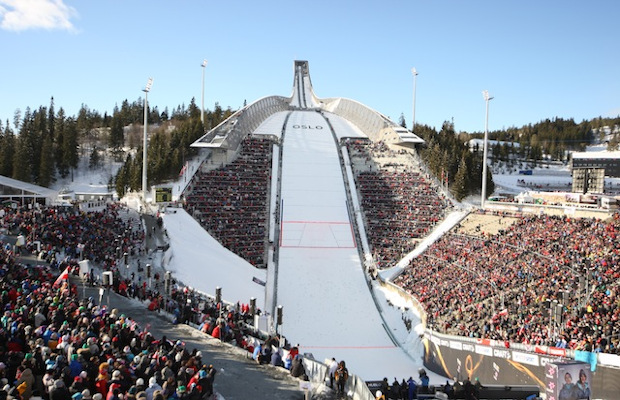

Oslo
Oslo to stolica Norwegii, której położenie jest wyjątkowe. Centrum miasta leży nad samym fiordem, otoczone jest rozległymi lasami, a obszary górskie są bardzo blisko. Tę nowoczesną i niezwykle spójną architektonicznie metropolię zwiedza się komfortowo i przyjemnie. Szerokie aleje, rozległe parki i przemyślana zabudowa sprzyjają spacerom i odkrywaniu surowego, skandynawskiego uroku miasta.
Skocznia Holmenkollbakken

Skocznia została otwarta na początku 2010 roku po odbudowie i modernizacji. Po remoncie otwarto ponownie bardzo ciekawe Muzeum Narciarstwa, a na wieży udostępniono dla turystów punkt widokowy, z którego można podziwiać panoramę miasta.
W Muzeum Narciarstwa można prześledzić historię tego sportu, zobaczyć ciekawe eksponaty z olimpiad zimowych a także zwiedzić ekspozycję na temat polarnych wypraw Amudsena i Nansena.
Imponująca wieża skoczni ma 60 metrów wysokości. Na budowę jej konstrukcji wykorzystano aż sto ton stali. Co roku, najczęśniej w marcu odbywają się tu zawody Pucharu Świata w skokach narciarskich. Sukcesy odnosili to m.in. Kamil Stoch, Piotr Żyła oraz Adam Małysz, który jest nazywany "królem Holmenkollen".
Wzgórze Holmenkollen
Przeciętny obywatel Norwegii wyrasta w czymś, co śmiało można nazwać ludową kulturą narciarską. Narty biegowe są obecne w życiu tych ludzi, w mediach, w historii i kulturze.
Wzgórze Holmenkollen to doskonałe miejsce do uprawiania tego sportu. Znajduje się tu wiele kilometrów przygotowanych tras biegowych. Narciarstwo biegowe to sport, który ma wielki, pozytywny wpływ na zdrowie fizyczne, ale również psychiczne, gdyż redukuje stres,
poprawia nastrój, zwalcza zmęczenie, kształtuje charakter oraz zwiększa pewność siebie. Do popularyzacji tej dyscypliny w Polsce bez wątpienia przyczyniła się Justyna Kowalczyk - mistrzyni olimpijska i świata oraz zwyciężczyni klasyfikacji generalnej Pucharu Świata, która na trasach Holmenkollen kilkukrotnie stawała na podium.
Pałac Królewski
Pałac królewski w Oslo to jeden z najbardziej charakterystycznych i znanych budynków w mieście. Oficjalna siedziba monarchów norweskich, miejsce oficjalnych wizyt, uroczystych obiadów, przyjmowania gości, ale także miejsce pracy większości członków dworu królewskiego. Obecnie w pałacu mieszka król Harald V wraz z małżonką. Warto dodać, że każdego roku 17 maja w święto narodowe, rodzina królewska pozdrawia poddanych z balkonu pałacowego. Budowę pałacu zainicjował parlament norweski w latach 20-tych XIX w. Kamień węgielny pod budowę położył król Karol III Jan w 1825 r.; prace ukończono dopiero za rządów Oskara I w 1849 r. Pałac wzniesiono w stylu klasycystycznym w kształcie litery U według projektu H.D. Linstowa. To budowla trzypiętrowa o powierzchni 17.624 m2, z czego 1 tys. m2 zajmują 173 pokoje królewskie oraz kaplica pałacowa. Jej główne skrzydło wychodzi na ul. Karla Johansa, zaś po bokach znajdują się dwa mniejsze skrzydła. Naokoło pałacu rozciąga się park, w którym można podziwiać kilka zabytkowych pomników.
Opera
Zbudowana w 2008 roku opera w Oslo jest największym budynkiem zbudowanym w Norwegii na przestrzeni ostatnich 700 lat, od powstania katedry Nidaros. Opera leży nad samą zatoką Oslofjorden, a jej gmach zadziwia prostotą i nowoczesnością.
Fundamenty opery w Oslo znajdują się pod poziomem morza (do 16 metrów p.p.m.), a główne materiały przeznaczone na budowę gmachu to biały kamień, drewno, metal i szkło. Biały marmur i granit posłużyły do stworzenia deptaka, który stał się nową przestrzenią miejską. Spadzisty dach opery sięga do samej podstawy i umożliwia swobodne spacerowanie.
Gmach opery w Oslo wygrał główną nagrodę na Światowym Festiwalu Kultury w 2008 roku, a także nagrodę im. Miesa van der Rohe za wkład w architekturę europejską w 2009 roku.
Fiordy
Nie ma bardziej relaksującego sposobu na zwiedzanie Norwegii niż przemierzanie kraju na pokładzie statku wycieczkowego.
Linia brzegowa Norwegii należy do najdłuższych na świecie, a tak wielu fiordów nie znajdziesz w żadnym innym kraju. Nawet słowo „fiord” pochodzi z języka norweskiego.
Z pokładu statku można obserwować takie zjawiska, jak zorza polarna oraz dzień polarny.